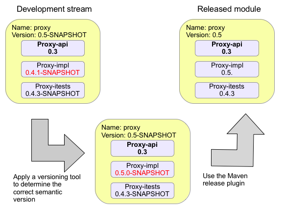
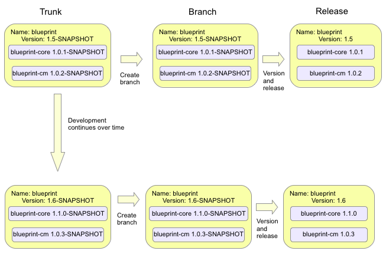

Release process requirements
Up to release 0.3 of Aries we released all of the modules at once, along with a set of samples which demonstrated how the Aries components could be used together.
After release 0.3 we wanted to rexamine the release process, the primary motivation for this was the observation that our
current process did not use semantic versioning, and, as an OSGi project we should be demonstrating best OSGi practice.
We started with the following set of requirements for any Aries release:
| No. | Description | Met currently |
|---|
| 1 | Follows OSGi semantic versioning | No |
| 2 | Must have a buildable source distribution | Yes |
| 3 | Must have release notes | Yes |
| 4 | Must be publicly announced | Yes |
| 5 | An easy way for users to download the bundles for a given component | Yes |
| 6 | Easy tagging/branching mechanism | Yes |
| 7 | A way to provide bug fixes | Yes |
| 8 | A way to ensure that a given component doesn't have conflicting dependencies | ? |
Release all Aries components at once.
Advantages of releasing everything at once and at the same level
- Conceptually very simple of consumers. For example, if as a consumer I pick up something called Blueprint version 0.4 I know that I
will need to get Util version 0.4 to go with it.
- A relatively simple release process, one JIRA component, one set of release notes.
- We can release a set of samples at the same version with some guarentee that the samples all work with the release.
Disadvantages of releasing everything at once
- Not using of OSGi semantic versioning of bundles. After every we release we bump the major versions of all bundles in trunk.
Package versions are managed separately (correctly) and the Maven bundle plugin will ensure packges are imported in the correct range based of
the projects dependencies. Implementers need to use "provide:=true" to get the correct range. Package export version should be maintained
either using package.info or in the pom.xml.
Releasing by module
Our ideal for a release process would involve to release by module, this is
really just an evolution of the process that we already use but it would involve
using semantic versioning of bundles. One might visualise the process like this:

In this case, we have a module version (independent of the version of its sub-modules) and a set of sub-modules which may each be indepndently versioned.
Advantages of release by module
- Releasing a coherent set of bundles that have been built and run together
- Releasing a buildable set of source for all constituent bundles in one zip file
- A more consumable unit than a set of single bundles - easier for Aries consumers. A smaller number of discrete downloads.
Disadvantages of the release by module process
- We would have to release a whole module at once, this would mean re-releasing bundles at the same level
(and with the same content) as a previous release. This is not a major issue but we would probably not want them in the
www.apache.org/dist/aries directory.
- Developer would need to be careful to version submodules poms independently from the parent/reactor pom. Again,
not a major issue but a change from the way we work at the moment.
- The Maven release plugin will not cope with having different levels of snapshot in the same release.
Therefore we would either require changes in the Maven release plugin or we would have to stop using it
and maintain our own alternative, to allow us to release by module.
- It's not all clear what the strategy for branching would be. For example, consider the following scenario:

In this case a release of the blueprint module at version 1.5 contains bundles blueprint-core at version 1.0.1 and blueprint-cm
at version 1.0.2.
Over a period of time, development in trunk continues and a change is made to blueprint-core which mandates an increase in
the major version. Another release of blueprint (version 1.6) is made containing blueprint-cm at version 1.0i.3 and blueprint-core at version 1.1.0.
Meanwhile a customer finds a problem in blueprint module version 1.5 in the blueprint-cm module. They would like a release of the blueprint module
at version 1.5.1 with blueprint-cm at 1.0.3. Unfortunately this is impossible because we have already released blueprint-cm at 1.0.3
and it works with blueprint-core 1.1.0. So, we have no way to meet the requirement
Releasing by bundle
Other OSGi projects, for example Sling and Felix, release by bundle.
Advantages of releasing by bundle
- Other projects already do it so there is a well understood model
- All the existing tools work
- OSGi semantic versioning can be used properly
Disadvantages of releasing by bundle
- It is more difficult for a consumer of Aries modules to understand which bundles form a logical grouping
- There are a lot of bundles to manage independently. This has implications:
- Releasing - mvn release:prepare, and so on, needs to be run for each bundle separately. However, many bundles could be rolled up into one vote.
- Each bundle has to have its own JIRA component
- Our svn tree would need to be restructured - probably in a similar way to the Sling tree. Each bundle would have its own trunk & branches.
- There are still some issues with branching and it is still possible to get into a situation similar to that described above.